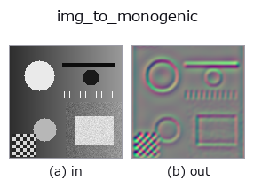

bridge op• Datenarten: image → qimage
• Aufruf: fullseye.apply(img, "img_to_monogenic", a=0.5, b=0.5) (das 2-D-Modell ist ein Bild plus zwei skalare Regler a,b∈[0,1])

*Die Abbildung ist die tatsächliche Ausgabe auf einer synthetischen 128×128-Eingabe. Links Eingabe, rechts Ausgabe. Punktwolken als Draufsicht-Streudiagramm (Helligkeit = z), 1-D-Reihen als Linie, Volumen als Maximum-Projektion entlang z, Videos als mittleres Bild, komplexe Bilder als Betrag; Rückgabewerte, die kein Bild ergeben, werden als Werte gezeigt.*
Regler a durchfahren (0,1 / 0,5 / 0,9, der andere Regler auf Standard):
▸ img_to_monogenic: Regler a durchfahren (Doku-Website)
Regler b durchfahren (0,1 / 0,5 / 0,9, der andere Regler auf Standard):
▸ img_to_monogenic: Regler b durchfahren (Doku-Website)
Auf anderen Bildern (synthetische Szene / Foto / Münzen. Obere Reihe: Eingaben, untere Reihe: deren Ausgaben. Regler auf Standard):
▸ img_to_monogenic: andere Eingaben (Doku-Website)
*Die 4. Spalte ist eine Farb-Eingabe (H,W,3). Dieser Op verarbeitet Farbe, ohne Kanäle zu vermischen (er faltet den Farbkanal nicht als dritte Raumachse).*
Baut das monogene Signal des Bildes auf einer Skala (Quaternionenfeld (H,W,4), Sort qimage).
Das monogenic_signal aus dem Register (Felsberg & Sommer 2001) selbst: wendet einen log-radialen raised-cosine-Bandpass an, paart ihn mit seinem Riesz-Paar und packt das in die Quaternion (Bandpassbild, R1, R2, 0). tb_monogenic_amplitude / tb_monogenic_phase / tb_monogenic_orientation nehmen nur ein qimage dieser Form an (eine Farb-Quaternion tb_rgb_to_quaternion wird als "kein monogenes Signal" abgewiesen), daher ist dies der Eingang zu dieser Familie.
• a → Mittenwellenlänge wavelength_px = 3 + 12 * a Pixel (3 bis 15 px, 9 px bei a=0.5; je kleiner, desto feinere Strukturen werden erfasst). ★Bis 2026-10-07 war es 8 * (0.25 + 1.75 * a), und a=0 fiel auf 2 px (Nyquist), was monogenic_signal stets abwies —— das untere Ende wurde auf 3 px angehoben, die 9 px bei a=0.5 blieben unverändert.
• b → Bandbreite bandwidth_octaves = 1.0 * (0.25 + 1.75 * b) Oktaven (1.125 bei b=0.5).
• Rückgabewert: (H, W, 4) float64. Der Wertebereich hängt von der Eingabe ab und passt nicht in [0,1] (das Riesz-Paar ist vorzeichenbehaftet).
• Leitfaden zur Familie gallery2d_bridge
• Katalog der Beispieldaten (Download-URLs / Lizenzen) — 2-D nutzt skimage.data (BSD/Public Domain) plus synthetische Bilder, 3-D nennt Download-URLs echter Datenquellen (Stanford, PDS, …).
• Herkunft und Literatur der Operatoren — die Quellen der Forschung/Verfahren, auf denen diese Operatorfamilie beruht.
• Der kanonische Algorithmus (Autor, Jahr) und seine Anwendungen stehen im Familienleitfaden oben.
Das Programm unten ist nachweislich lauffähig (gleiche Eingabe wie die Abbildung). In der Studio-Hilfe wird dieser Block zu Schaltflächen, die es sofort laden und ausführen.
img_to_monogenic 0.50 0.50
▸ Diese Pipeline laden · Laden & ausführen
• gallery2d_bridge — py -3.11 examples/gallery2d_bridge.py
qimage als Eingabe)identity · tb_quaternion_to_rgb · tb_quat_norm · tb_quat_conjugate_image · tb_quat_normalize_image · tb_monogenic_amplitude · tb_monogenic_phase · tb_monogenic_orientation
bridge)img_to_points · img_to_keypoints · img_to_signal · img_to_projection_profile · img_to_counts · img_to_matrix · img_to_video · img_to_volume
*Provenance: ops.py — 2D Operator-Registry. Diese Notiz wird von tools/opdocs.py md erzeugt (nicht von Hand bearbeiten).*
© 2026 Kazufumi Furuse — Fullseye operator documentation. Licensed under Apache-2.0.